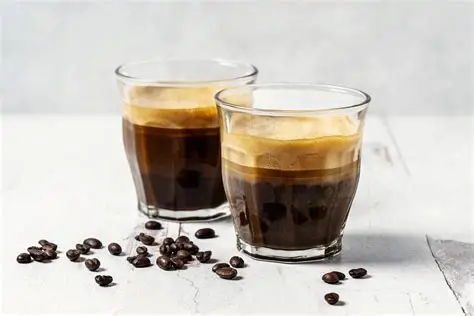
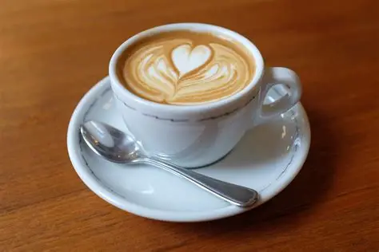

frappuccino
Descripcion breve: Un frappuccino es una bebida fría que combina café o crema con hielo y otros ingredientes
Precio:Q.10.00
Ingredientes:Ingredientes: Café, hielo, leche, y opcionalmente, jarabe de sabor o crema.

Espresso
Descripcion breve: El espresso es una bebida concentrada de café que se caracteriza por su sabor intenso y suave,
Precio:Q.15.00
Ingredientes:Ingredientes: 1,5 tazas de café molido (preferiblemente francés o de tueste oscuro). 2 tazas de agua caliente.

Cappuccino
Descripcion breve: El cappuccino es una bebida de café originaria de Italia, compuesta por partes iguales de espresso, leche caliente y espuma de leche.
Precio:Q.25.00
Ingredientes:Ingredientes: Dos chupitos de espresso (60ml) Leche al vapor (60ml) Leche espumada (60ml)

Cappuccino
Descripcion breve: El cappuccino es una bebida de café originaria de Italia, compuesta por partes iguales de espresso, leche caliente y espuma de leche.
Precio:Q.25.00
Ingredientes:Ingredientes: Dos chupitos de espresso (60ml) Leche al vapor (60ml) Leche espumada (60ml)